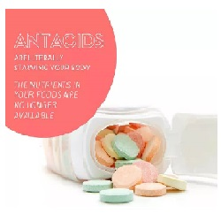

Antacids

Antacid ဆိုတာဘာလဲ
- Aluminium, Magnesium hydroxide, Simethicone များပါဝင်သော အစာအိမ် လေနိုင်ဆေးများကို Air X, Digene စသောနာမည် အမျိုးမျိုးနှင့်တွေ့ရလေ့ရှိသည်။
- အစာအိမ်ထဲတွင် လေများပြီး လေပွလေထခြင်း၊ မအီမသာဖြစ်ခြင်းများကို သက်သာစေပါသည်။
- Simethicone သည်များနေသော လေများကို ပြိုကွဲစေနိုင်ပြီး Aluminium နှင့် Magnesium သည် အစာအိမ်အက်စစ်များခြင်းကို လျော့နည်းစေသော အစွမ်းရှိသည်။
ဆေးကိုဘယ်နေရာတွေမှာသုံးလဲ
- အစာအိမ်အက်စစ်များပြီး လေပွခြင်း၊ မအီမသာဖြစ်ခြင်း၊ ရင်ပူခြင်း၊ ဗိုက်အောင့်ခြင်းများတွင် အဓိကသုံးပါသည်။
- လေဆေးသည် ရှိထားသော အစာအိမ်အက်စစ်များကိုသာ လျော့နည်းအောင် ပြုလုပ်ပေးနိုင်ပြီး အက်စစ် အသစ်ထုတ်လုပ်ခြင်းကို မလျှော့ချပေးနိုင်ပါ။
- လေဆေးကို အခြား အစာအိမ်အက်စစ်ထုတ်လုပ်ခြင်းကို လျော့နည်းစေသောဆေးများ (Cimetidine, Ranitidine, Omeprazole) နှင့်လည်း တွဲသုံးနိုင်ပါသည်။
ဆေးကိုဘယ်လိုသောက်ရမလဲ
- ဆေးပြားဆိုလျှင် ကြေညက်အောင်ဝါးစားပြီး ရေတစ်ဖန်ခွက်သောက်ပေးပါ။
- ဆေးရည်ဆိုလျှင် ဆေးဘူးကို သေချာလှုပ်ပြီးမှ သောက်ပေးပါ။
- ရိုးရိုးသောက်ရေကလွဲပြီး အခြားအရည်များနှင့် တွဲသောက်လျှင် ဆေးအာနိသင်အပြည့်မရနိုင်ပါ။
- ဆေးကိုတစ်ပတ်ကျော် သောက်သော်လည်း မသက်သာလျှင် (သို့မဟုတ်) လက္ခဏာပိုဆိုးလာလျှင် ရိုးရိုး လေနာမဟုတ်ဘဲ အခြားရောဂါများဖြစ်နိုင်သောကြောင့် ဆရာဝန်နှင့်သေချာပြပါ။
ဘေးထွက်ဆိုးကျိုးဘာတွေရှိလဲ
- ဝမ်းချုပ်ခြင်း၊ ဝမ်းလျှောခြင်း ၊ပျို့အန်ခြင်း၊ ခေါင်းကိုက်ခြင်းများဖြစ်နိုင်ပါသည်။
- Magnesium သည်ဝမ်းလျှောနိုင်သောကြောင့် Magnesium မပါသော လေဆေးသောက်လျှင် ဝမ်းလျှောခြင်းကို ကာကွယ်နိုင်ပါသည်။
- Aluminium သည် ဝမ်းချုပ်စေနိုင်သောကြောင့် ရေများများသောက်ဖို့လိုပါမည်။
- Aluminium ပါသောလေဆေးသည် Phosphate ဓာတ်ကို ပေါင်းနိုင်သောကြောင့် ကိုယ်တွင်း Phosphate ဓာတ် ကျသောလက္ခဏာများ ဖြစ်သည့် ခံတွင်းပျက်ခြင်း၊ ပင်ပန်းနွမ်းနယ်ခြင်း၊ ကြွက်သားအားနည်းခြင်းများ ဖြစ်နိုင်ပါသည်။
- ရှားပါးသော ပြင်းထန်ဆိုးကျိုးများ ဖြစ်သည့် မူးဝေခြင်း၊ သတိမေ့ခြင်း၊ အညိုရောင်အန်ခြင်း၊ ဝမ်းမည်းမည်းသွားခြင်း၊ အသက်ရှုနှေးခြင်း၊ နှလုံးခုန်နှေးခြင်း၊ ဆီးသွားလျှင်နာကျဉ်ခြင်း၊ ဗိုက်နာခြင်းများ ဖြစ်လျှင် နီးစပ်ရာဆေးခန်းကို အမြန်သွားပြပါ။
- ဆေးနှင့်ဓာတ်မတည့်ဖြစ်ခြင်းတော့တော်တော်ရှားပါတယ်။
ဆေးသောက်လျှင် ဘာတွေ ကြိုသိထားဖို့လိုလဲ
- လေဆေးတွင်ပါဝင်သော Aluminium hydroxide, Magnesium, Simethicone များနှင့် ဓာတ်မတည့်ဖူးလျှင် အခြားဆေးမတည့်တာရှိလျှင် အရက်ကို မကြာခဏ စွဲသောက် နေသောသူဖြစ်လျှင်၊ ကျောက်ကပ်ရောဂါ၊ ရေဓာတ်နည်းသော အခြေအနေဖြစ်လျှင် ဆရာဝန်နှင့်ကြိုတင်တိုင်ပင်ပါ။
- ဆေးတွင် သကြားဓာတ် အနည်းငယ်ပါနိုင်သောကြောင့် ဆီးချိုရှိသော သူများသတိထားရပါမည်။
- ကိုယ်ဝန်ဆောင်နှင့် နို့တိုက်မိခင်များ ဆရာဝန်ညွှန်ကြားမှဆေးသောက်ရပါမည်။
ဆေးအစွမ်း ဘယ်လိုတွေရှိလဲ
- လေဆေးနှင့် အခြားဆေးများ တွဲသောက်လျှင် ဆေးအစွမ်း အမျိုးမျိုးဖြစ်နိုင်သောကြောင့် မိမိသောက်နေရသော ဆေးအကုန်လုံးကို ဆရာဝန်ထံ ကြိုအသိပေး ပြောပြဖို့လိုပါသည်။
- Phosphate ပါသောဆေးများ၊ တိုင်းရင်းဆေးများနှင့် တွဲသောက်လျှင်လည်း ဆေးအာနိသင် ပြောင်းသွားနိုင်ပါသည်။
ဆေးသောက်များသွားလျှင်ဘာဖြစ်မလဲ
- အသက်ရှုကြပ်ခြင်း၊ သတိမေ့ခြင်းများ ဖြစ်နိုင်သော်လည်း ပြင်းပြင်းထန်ထန် ဆိုးကျိုးမရှိပါ။ သို့သော် ဆေးကိုပမာဏမလွန်အောင်တော့ သတိထားရပါမယ်။
- စိတ်ဖိစီးမှုလျှော့ချခြင်း၊ ဆေးလိပ်ဖြတ်ခြင်း၊ အရက်လျှော့သောက်ခြင်း၊ ကာဖင်း ဓာတ်ပါသော အစားအစာ၊ ပူစပ်သော အစာများကို ရှောင်ကြဉ်နိုင်လျှင် အစာအိမ်လေဆေးအစွမ်းအကောင်းဆုံးရနိုင်သလို အစာအိမ် ရောဂါလည်း သက်သာနိုင်စေပါတယ်။
Source– ဒေါက်တာအိမ့်ချယ်ရီ